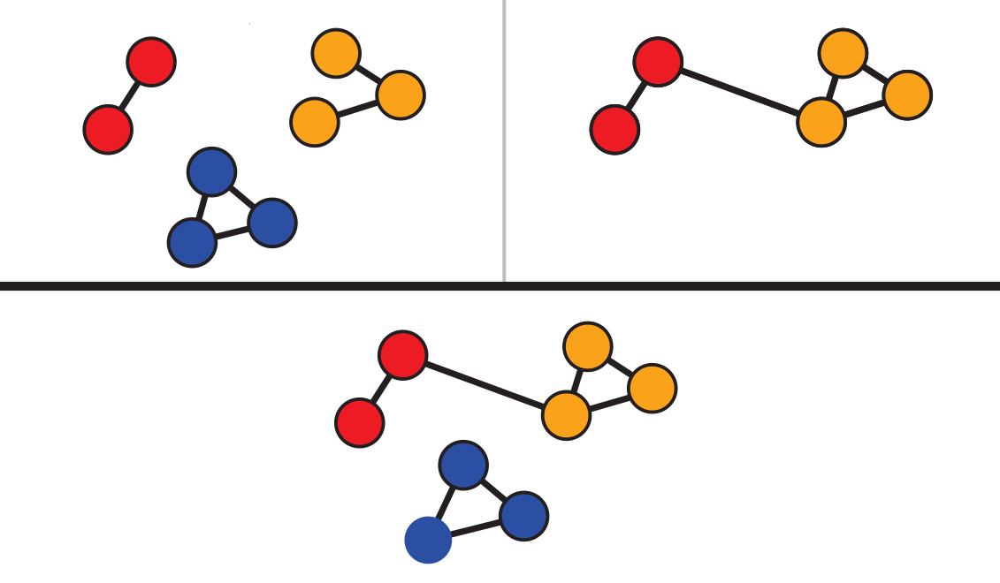
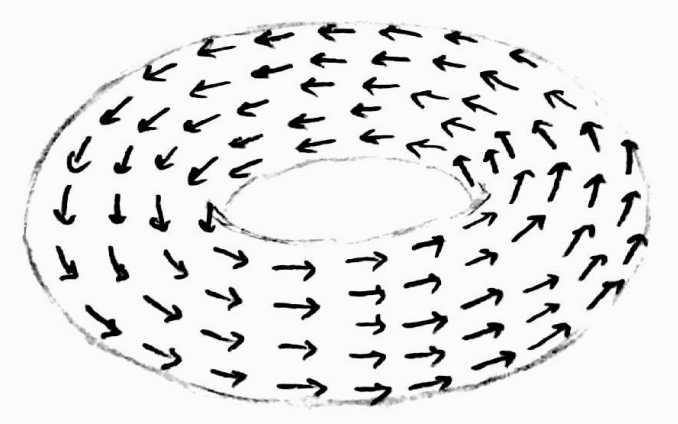

Raphaël Tinarrageraphael.tinarrage[at]ist.ac.at Institute of Science and Technology Austria
|

|
|
|
|
|
|
|
|
2024–present: Postdoc at ISTA in Uli Wagner's group
2021–2024: Postdoc at FGV EMAp, advised
by César Camacho
2017–2020: PhD at Université Paris-Saclay and Inria,
advised by Fred
Chazal & Marc
Glisse
Here is my curriculum vitae
Research
My work revolves around Topological Data Analysis (TDA), including its
theoretical
developments and practical applications.
Topological inference:
Stability and consistency of persistent homology, estimation
of topological invariants other than homology groups, varifold formalism, detection of Lie group symmetries.
Combinatorial topology:
Triangulation of manifolds, simplicial approximation, classifying spaces, quantitative (simplicial)
homotopy.
Concrete applications:
Medical image analysis, (equivariant) neural networks, large/dynamic graphs, natural language processing,
Brazilian law.
Journal articles
|
|
LieDetect: Detection of representation orbits of compact Lie groups from point clouds
|
|
|||
|
Empirical analysis of binding precedent efficiency in Brazilian Supreme Court via case
classification
(R. Tinarrage, H. Ennes, L. Resck, L. Gomes, J. Ponciano, J. Poco)
|
|
||||
|  |
ZigzagNetVis: Suggesting temporal resolutions for graph visualization
using zigzag persistence
(R. Tinarrage, J. Ponciano, C. Linhares, A. Traina, J. Poco)
|
|
|||
|
|
Recovering the homology of immersed manifolds
|
|
|||
|
|
Computing persistent Stiefel-Whitney classes of line bundles
|
|
Conference articles
|
|
O impacto da Súmula Vinculante 26 na diminuição de demanda similar no STF: uma análise
quantitativa por modelos de machine learning
|
|
|||
|
Progressão de regime em crimes hediondos no Supremo Tribunal Federal: uma análise empírica
pela Súmula Vinculante 26
|
|
||||
|
|
DTM-based filtrations
|
|
Preprints
|
Train-Free Segmentation in MRI with Cubical Persistent Homology
|
|
||||
|
|
Simplicial approximation to CW complexes in practice
|
|
PhD dissertation
|
|
Topological inference from measures and vector bundles
|
|
Code
My PhD work is implemented in the Python packagevelour. It can be downloaded via PyPI or GitHub.
My other articles are also implemented in Python and available on my GitHub page.
Teaching
Graduation course at FGV EMAp (in Portuguese):
|  |
Cálculo Vetorial: Integrais múltiplas, de linha e de superfície (2024)
|
|
Summer courses at FGV EMAp (undergraduate and master's students):
|
|
General and Combinatorial Topology (2023)
|
|
||
|
|
Topological Data Analysis with Persistent Homology (2021)
|
|
Teaching fellow at Université Paris-Saclay:
| 2017–2019 | M257 | TD Equations différentielles ordinaires, L2 Biologie-Chimie. More information here. |
| 2017–2020 | M331 | TP Inférence statistique, L3 MINT. |
| 2017–2020 | M326 | TD Projet modélisation et calcul scientifique, L3 MINT. |
Mentoring
During my postdoc at FGV EMAp, I advised three student projects.
| 2022–2023 |
Fine-tuning legal language models via annotations
BSc students: Livia Cales, Victoria Cury, Samanta Clara Lopes, Eduardo Portol, João Meirelles, Ana Rosenburg, and Helena Torres |
| 2021–2023 |
Data analysis of symmetries with Lie groups
MSc student: Henrique Ennes |
| 2021–2023 |
Machine learning for Súmulas Vinculantes
BSc students: Beatriz S. Chagas, Ana C. M. Jaccoud, Carla M. Damian, and Pedro B. de Oliveira |
Talks and posters
Invited and contributed talks
| 11 June 2025 |
|
Online, AATRN Seminar, Detection of representation orbits of compact Lie groups from point clouds |
| 14 Feb 2025 |
|
ESI, Infinite-dimensional Geometry Conference, Train-Free Segmentation in MRI with Cubical PH |
| 17 Oct 2024 |
|
UFF, Seminário de análise, LieDetect: Detecção de órbitas de representações de grupos de Lie |
| 4 Oct 2024 |
|
UFRJ, Sextas Matemáticas, LieDetect: Detecção de órbitas de representações de grupos de Lie |
| 31 July 2024 |
|
UFBA, XXIII Encontro Brasileiro de Topologia, Classifying spaces in TDA |
| 28 May 2024 |
|
Online, Seminário PMA, LieDetect |
| 25 April 2024 |
|
FGV Rio, EMAp seminar, Simplicial approximation in practice |
| 8 Mar 2024 |
|
FGV Rio, Brazilian Workshop on Continuous Optimization, LieDetect |
| 31 Jan 2024 |
|
Online, Datashape Seminar, LieDetect |
| 19 Jan 2023 |
|
FGV Rio, Workshop On Legal Digital Intelligence, TDA and Súmulas Vinculantes |
| 21 Nov 2022 |
|
USP São Carlos, ICMC Seminário, TDA para escolha de resolução temporal na visualização de grafos |
| 14 Sept 2022 | Santiago, Chile, XI Encontro do CONPEDI, O impacto da SV 26 na diminuição de demanda similar no STF | |
| 13 Sept 2022 | Santiago, Chile, XI Encontro do CONPEDI, Progressão de regime em crimes hediondos no STF | |
| June 2022 |
|
Mathematical Institute Oxford, ATMCS, Simplicial approximation to CW-complexes in practice |
| 8 June 2021 |
|
Online, SoCG Minisymposium Comp. Top., Simplicial approximation to CW-complexes in practice |
| Dec 2020 |
|
Applied Algebraic Topology Network, Persistent Stiefel-Whitney classes |
| Nov 2020 |
|
Online, EPFL Applied Topology Seminar, Persistent Stiefel-Whitney classes |
| Oct 2020 |
|
Orsay LMO Univ. Paris-Sud, PhD Defense, Topological inference from measures and vector bundles |
| June 2020 |
|
Online, Symposium on Computational Geometry, Recovering the homology of immersed manifolds |
| Mar 2020 |
|
Inria Saclay, Datashape seminar, Introduction aux classes de Stiefel-Whitney |
| Oct 2019 |
|
Inria Saclay, Datashape seminar, Recovering the homology of immersed manifolds |
| June 2019 |
|
Portland, Symposium on Computational Geometry, DTM-based filtrations |
| June 2018 |
|
IST Austria, Algebraic Topology: Methods, Computation and Science, DTM-based filtrations |
Dissemination of TDA
| 18 June 2024 |
|
UFRJ, CCMN, Minicurso TDA II/II: Inferência homológica |
| 11 June 2024 |
|
UFRJ, CCMN, Minicurso TDA I/II: Invariantes topológicos |
| 5 Oct 2023 |
|
Online, Dynamical Systems & Applications, TDA Minicourse IV/IV: Python tutorial |
| 3 Oct 2023 |
|
Online, Dynamical Systems & Applications, TDA Minicourse III/IV: Persistent homology |
| 28 Sept 2023 |
|
Online, Dynamical Systems & Applications, TDA Minicourse II/IV: Homological inference |
| 26 Sept 2023 |
|
Online, Dynamical Systems & Applications, TDA Minicourse I/IV: Topological invariants |
| 26 Jan 2023 |
|
FGV Rio, Summer School on Data Science, TDA Minicourse III/III: Persistent homology |
| 26 Jan 2023 |
|
FGV Rio, Summer School on Data Science, TDA Minicourse II/III: Homological inference |
| 25 Jan 2023 |
|
FGV Rio, Summer School on Data Science, TDA Minicourse I/III: From topology to data analysis |
| 24 Nov 2022 |
|
USP São Carlos, ICMC Seminário, Análise Topológica de Dados e suas aplicações |
| 9 June 2021 |
|
Online, EMINES, Analyse Topologique des Données II/II : Homologie persistante |
| 26 May 2021 |
|
Online, EMINES, Analyse Topologique des Données I/II : Invariants topologiques |
| April 2021 |
|
FGV Rio, EMAp Seminário, Topological inference in TDA II/II: Persistence barcodes |
| April 2021 |
|
FGV Rio, EMAp Seminário, Topological inference in TDA I/II: Topology in datasets |
| Dec 2020 |
|
UMPA Lyon, Séminaire EDP Modélisation, Inférence topologique avec l'homologie persistante |
| May 2020 |
|
LMO Orsay, Séminaire informel, Introduction à l'homologie persistante |
Miscellaneous
|
|
I used to conduct the MATh.en.JEANS workshop in Collège Alain Fournier (Orsay). It is an introduction to research for middle school students, resulting in a scientific-like article. More information here. | |
|
|
A gentle introduction to persistent homology, in French. |